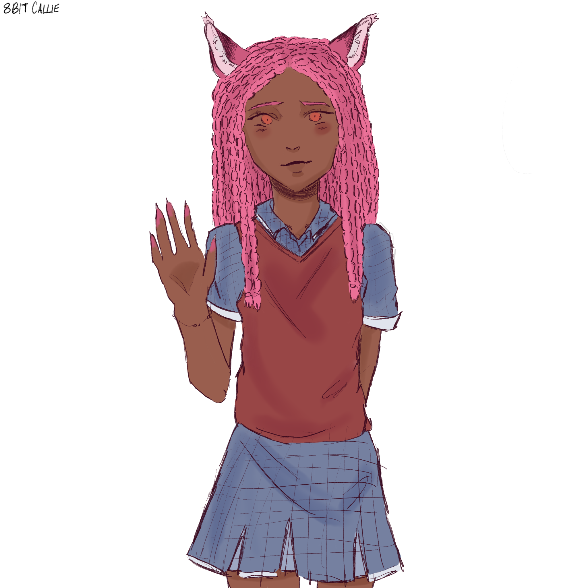
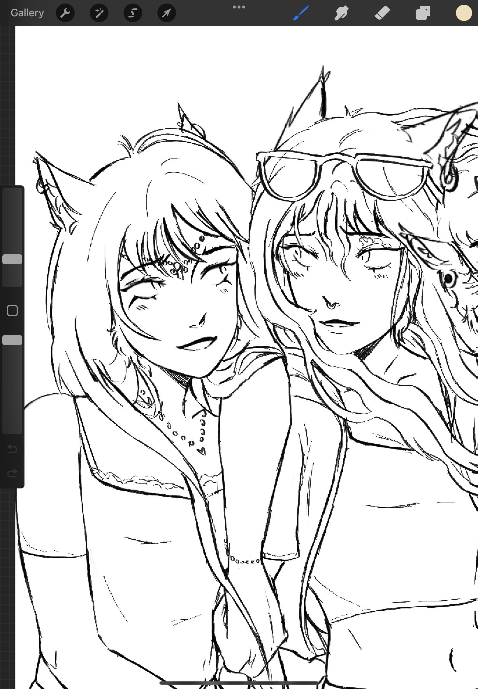

Main Characters
Meet the main characters
Darcy/Panic Black
Darcy/Panic Black, is the main character of Blackout. She is sly and bold. She doesn’t let anyone get away with anything and is quite enthusiastic and sassy. Coming from a pack of wolves and german shepherds, there’s quite some diversity within her family, with her cousins even being red deers! Her greatest passion was to be a professional dancer, but ended up becoming a faithful knight; being one of the only females in her team.Suffering from blackouts, she has an eagerness to learn about the world around her.

Jai/Magenta Loxeis
Despite being in a trade field, Jai/Magenta Loxeis is quite the charismatic character, and is one of Panic's Best friends. Jai also suffers from blackouts. He doesn’t let it get in the way of his dreams of being a technology worker in the SKF alongside Panic’s work in the knight force of the SKF. He also learns to craft weapons in which he also creates Panic’s signature sword! As a red goat who may be a bit too energetic for the world he lives in, he’s just as desperate to learn the truth of their new world.

Chrissie Jackson
Being another one of Panic’s best friends, you can never get bored of this maned-fox. Chrissie Jackson is the boastful and sometimes overly-dramatic one of the group. She can also be typically known as the “mum” of the group and always makes sure everyone has what they need. She is the partner of a member of Panic’s pack; Drake. She’s super outgoing and always wants to get out and explore the world, which suits the fact that she can follow her dear friends in their journey as well.

Ava Tarik
As the princess of the city of Tarik, Ava Tarik is a white short-hair cat who was taken by an unknown cult for several years. She has a sweet nature and is calm most of the time but if provoked, can get really nasty. She strives to learn her royal duties after years of being “the missing princess.” She also helps Darcy on her journey with the blackouts.

Valerie Golding
Valerie Golding is another member of Panic’s friends and is a special one out of the group - being the only mythical animal. Valerie is a modest, selfless girl who will protect her friends at any cost. She’s rarely around due to her “dragon responsibilities.” She’s also very knowledgeable about history and other things about the world. Panic always seeks her out for help but Panic doesn’t know that she has plenty of secrets to hide. She knows a lot more than she thinks she knows!
Darcy also becomes her personal appointed knight as Valerie also becomes a princess of the Mythical city.